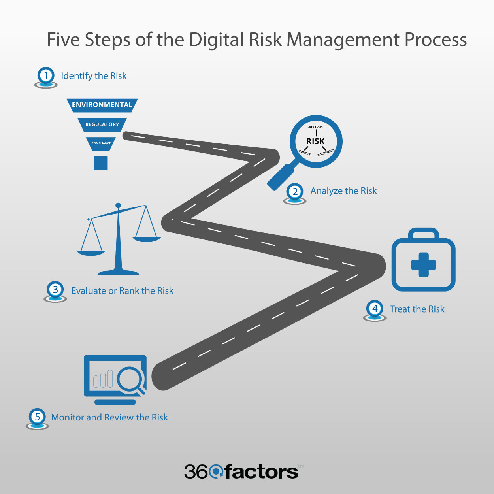

Nowadays companies are obliged to integrate IT into their businesses otherwise they face losing out to competitors. In large companies like Multinational Corporations (MNCs), IT is used to build databases and connect teams together within the same organisation. Moreover, small companies require some form of IT to process payments and facilitate transactions in a more digitised world where going paperless is becoming a stark reality in society.
IT has a plethora of uses for instance, some companies like (IBM) dispose of Management Information Systems (MIS) to track sales data, expenses and productivity levels.
During my time at Code Nation, we have utilised Trello to track of tasks. A problem-solving mindset is essential to overcoming setbacks with regards to IT. In addition to Trello, coding languages like HTML and CSS are two languages that are highly applicable to website development and design. Becoming a more experienced coder over time you will find better ways of making the same piece of code. The shorter the code is, the better it is and more efficient as more time will be saved.
A lot of the time you will rarely be working alone, and as such, being communicative and a team player is a desirable skill in IT. Furthermore, I would say that being committed and driven are required for performing efficiently in IT.
https://digitalmarketinginstitute.com/en-gb/blog/2017-08-18-what-skills-do-i-need-to-be-a-digital-project-manager
Broke up the blog development into separate tasks, and then began researching the necessary information. First find out what is required for the project, ask yourself what research must I do? What coding language is required? And then plan accordingly, it is important to note additional actions along the way - ideas will pop into mind as you work; be sure to note them down. For example, I used Trello to archive my progression with tasks, gradually moving my tasks across the Kanban board.
In project management there is always the likelihood of something not going to plan. For instance, they run over-budget, over-time and not delivered at the specified deadline. To give a good example, imagine that Apple releases a new version of iOS, and the site you have in development doesn’t work properly on the new iOS version [link]. By allocating time before the project begins to planning, you will be better prepared in adapting to the unforeseen.
In project management there is always the likelihood of something not going to plan. For instance, they run over-budget, over-time and not delivered at the specified deadline. To give a good example, imagine that Apple releases a new version of iOS, and the site you have in development doesn’t work properly on the new iOS version [link]. By allocating time before the project begins to planning, you will be better prepared in adapting to the unforeseen.
Digital projects can fail the following steps are some means of dealing with this.
Source: https://www.360factors.com/blog/five-steps-of-risk-management-process/
According to Duden (2018), there are five steps of the risk management process.
Step 1: Identify the Risk
There are many risks that affect digital projects: legal risks, environmental risks, market risks, regulatory risks. The first step is to identify these risks.
Step 2: Analyze the risk
To determine the severity and seriousness of the risk it is necessary to see how many business functions the risk affects. Risks need to be ranked and prioritized. Most risk management solutions have different categories of risks, depending on the severity of the risk (Duden, 2018).
Step 3: Evaluate or Rank the Risk
Risks then need to be ranked and prioritized.
Step 4: Treat the Risk
Every risk needs to be eliminated or contained as much as possible.
Step 5: Monitor and Review the risk
Not all risks can be eliminated – some risks are always present. Market risks and environmental risks are just two examples of risks that always need to be monitored.
Specifically for web design, it is widely understood that HTML and CSS are good tools for developing websites. Speak to industry professionals who have expertise in that area. For example, at Code Nation it was recommended to use GitHub, Visual Studio, HTML & CSS for website design. Shortlist different IT systems - analyse the needs of your project and the project goals. Some goals to take into consideration are: cost, performance, promotion. Your app/website will benefit from taking the aforementioned goals into account. Examine how the available technologies align with your project goals. Make a list of front-end, back-end and database technologies.